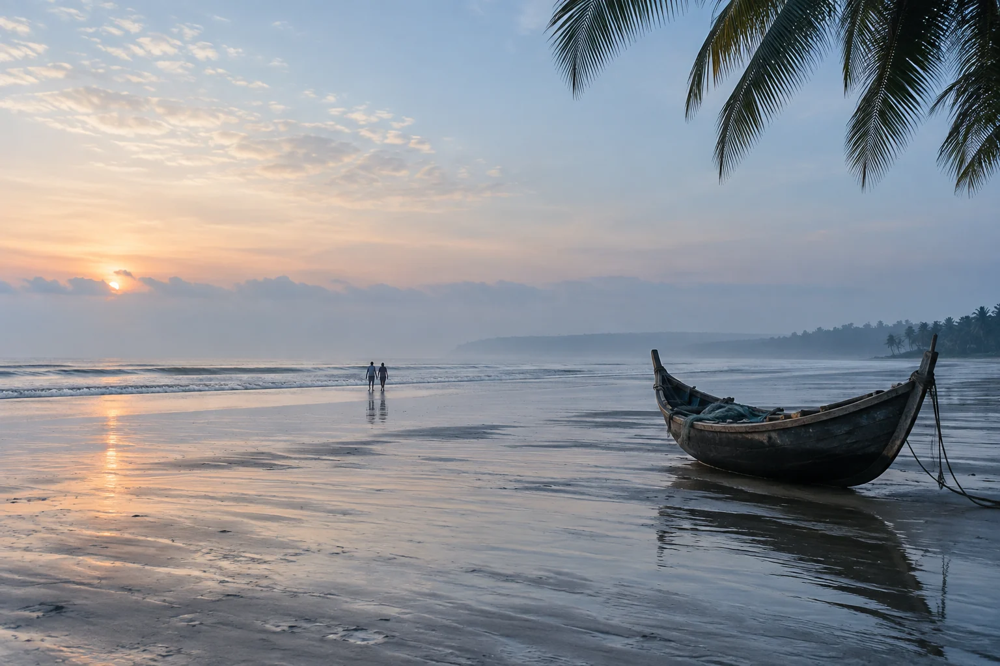

At Mermaid, days begin under the trees and find their way to the water. Handmade places, open skies and all the time you came here to find.
WELCOME TO THE SLOWER SIDE OF COX'S BAZAR


THE STAYS
Find your kind of quiet.
The art of
doing less.
No two stays need to feel the same. Follow the garden, the sea, or simply the hour you are in.

BEYOND THE ROOMClose to nature.
Close to nature.
Closer to yourself.
The architecture follows the coast, not the other way around. Reclaimed timber, woven bamboo and palms are part of the stay—not its backdrop.
DISCOVER OUR STORY

A LITTLE FURTHER AWAY
Leave the schedule behind. Keep the feeling.
WHAT STAYS WITH YOU
The best moments are the ones you never planned.
Walk barefoot to the shore. Find your way back through the garden. Sit with the people you love until there is nothing left to do but stay.
EXPLORE THE DAYS
EXPERIENCESSmall things.
Small things.
Lasting memories.
There is more than one way to feel this place. Let the day decide.

MAKE THE DAY YOURSMoments to